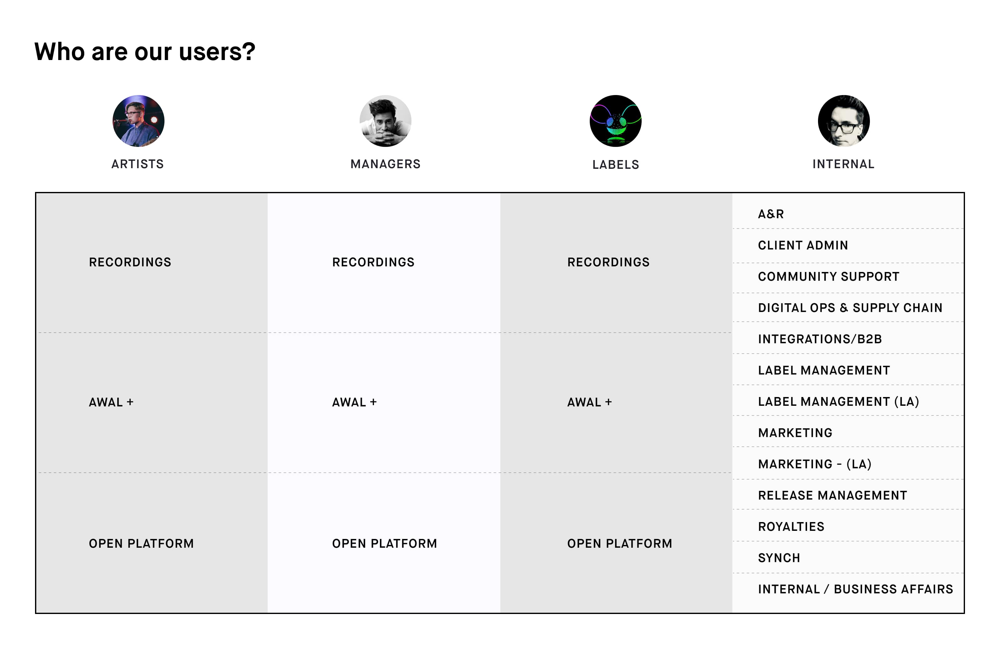
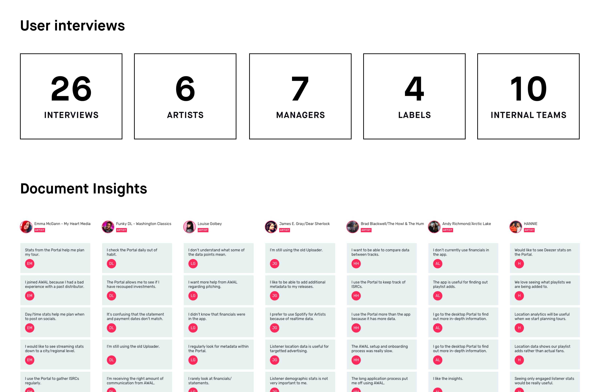
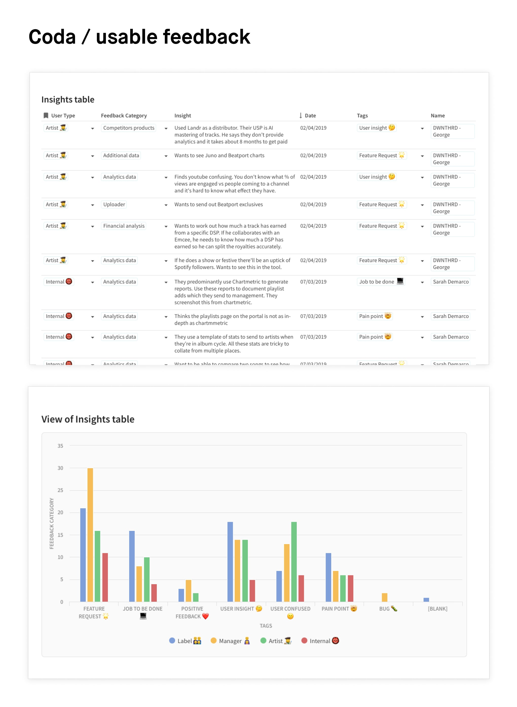
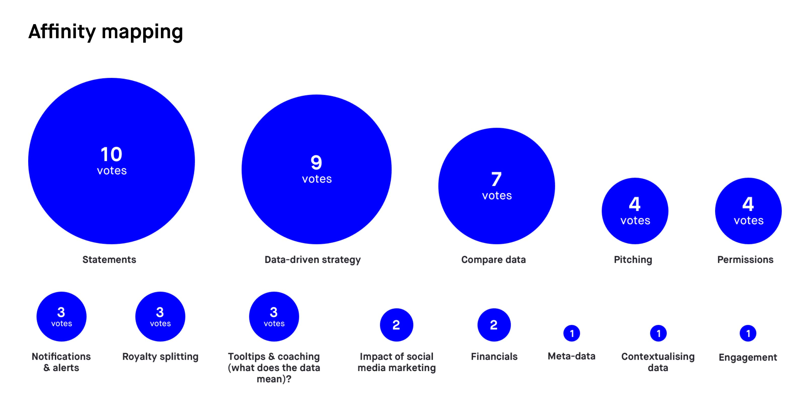
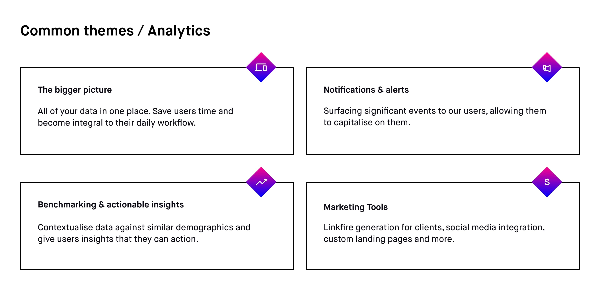
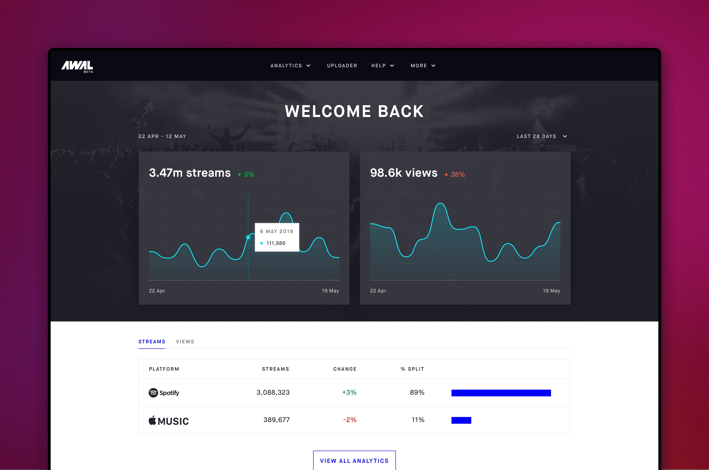

AWAL music
Generalist
2018 — 2020
AWAL is a music label created to help empower smaller artists and give them access to the opportunities and support that you would get from a major label. They were bought by Sony in March 2022.
CONTEXT
My journey at AWAL began in 2018 and I was brought into the team tasked with redesigning the artist portal. This is a product that contains all the tools a musician needs to distribute music, analyse the streaming data and manage royalties from their catalogue. The existing product was very dated and built on an old monolithic code-base that was being gradually migrated to the cloud. Work on parts of the portal had already begun, but we started by instigating a large research piece to better understand the needs of the artists — depending on the stage of their career, these were very different.
RESEARCH
Understanding the different persona types was crucial for this project. A small bedroom artist will have completely different needs to a large, established recording artist. How they interact with the portal and our teams are very different. We started by conducting a series of user interviews across our persona types with artists, labels and internal teams to understand people's motivations, pain points and goals when using AWAL as a service and within the music industry in general.

Different user types across the platform

User interview breakdown with key insights
To manage the amount of data collected from the interviews, we created a database using Coda to log all the key insights. Previously I've found research findings get lost in confluence or wherever they are stored. Coda let us organise the insights in a format that allowed us to quickly filter and find insights/pain points/feature requests around a specific topic. This became a powerful resource and was a convenient reference for us and other stakeholders moving forward. We managed to connect our customer feedback directly to the database using Zapier to link the API, so new insights were continually being added.

Our user feedback database in Coda
From here we needed a way to synthesise all these insights into something we could use to move forward. We ran an affinity mapping session with key stakeholders across the business where we pulled out the key insights from all the interviews and grouped them into common themes. We then voted on which themes we felt were most important from a user and business perspective. This gave us a starting point for areas to focus on for our initial designs.

The themes ranked by importance

The final set of themes used to kick off ideation
One of the main themes that surfaced was the need to quickly see all the data rolled up into a single view. Going into individual services to look at analytics per platform (eg streaming stats for Spotify vs Apple Music), is time-consuming and it's difficult to parse how one compares to the other. Consolidating these stats together allowed artists & labels to quickly get a sense of how an artist or release was performing.

Updated welcome dashboard